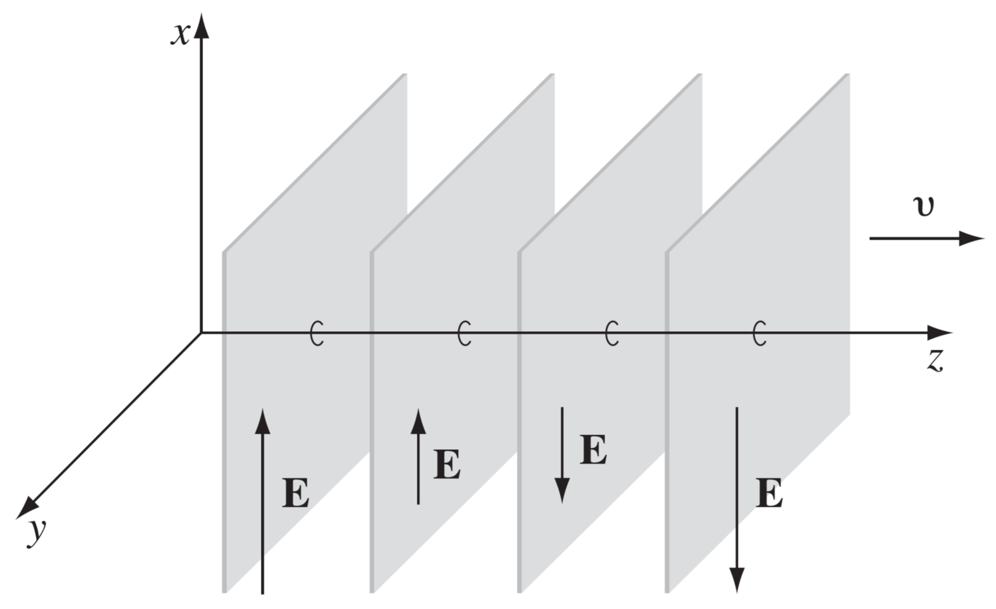

1. La radiación como un fenómeno electromagnético#
1.1. Repaso de cálculo vectorial#
1.1.1. Campo escalar y vectorial#
Un campo escalar representa la distribución espacial de una magnitud. Por ejemplo, distribución de densidad, temperatura o presión. En coordenadas cartesianes: \(f = f(x,y,z)\), donde \(f\) es un campo escalar.
Un campo vectorial representa la distribución espacial de una magnitud vectorial. Por ejemplo, distribución de velocidades, campo eléctrico o magnético. En coordenadas cartesianas: \(\vec{f} = \vec{f}(x,y,z)\), donde \(\vec{f}\) es un campo escalar.
Por ejemplo, consideremos la siguiente modelación de convección natural en cavidad cuadrada:

Aquí podemos visualizar la distribución espacial de temperaturas y velocidades de un fluido sometido a las condiciones indicadas en la figura.
De esta figura podemos identificar:
Campo escalar: Distribución de temperaturas
Campo vectorial: Distribución de velocidades
1.1.2. Operadores diferenciales#
Operador Del
Definimos el operador \(\nabla\) o “del”, como:
Operador Gradiente.
Es equivalente a la derivada de una función, pero en múltiples dimenciones. Permite identificar zonas de crecimiento o decrecimiento de un campo escalar o vectorial. Se define como el operador Del multiplicado por el campo escalar.
El gradiente de un campo escalar \(f\), es un vector
Operador Divergente.
Se aplica a campos vectoriales. Es una medida de cuanto un campo vectorial diverge o converge respecto de un punto en cuestión. Se define como el producto punto entre el operador Del y un campo vectorial:
Por ejemplo:

(a) \(\nabla\cdot\vec{f} \gt 0\)
(b) \(\nabla\cdot\vec{f} = 0\)
(c) \(\nabla\cdot\vec{f} \gt 0\)
Operador Rotacional.
Se aplica a campos vectoriales. Es una medida de cuanto un campo vectorial rota respecto de un punto en cuestión. Se define como el producto cruz entre el operador Del y un campo vectorial:
Por ejemplo:

(a) \(\nabla\times\vec{f} \gt 0\)
(b) \(\nabla\times\vec{f} \gt 0\)
En la figura anterior (divergente), \(\nabla\times\vec{f} = 0\) en todos los casos.
1.2. Ecuaciones de Maxwell#
1.2.1. Ley de Gauss#
El flujo de campo electrico a través de una superficie cerrada es proporcional a la carga eléctrica, \(\rho\), contenida dentro de esta superficie.
En su forma diferencial:
Donde:
\(\vec{E}\), es el campo eléctrico (se mide en unidades de \(\mathrm{V/m}\)).
\(\varepsilon_0 = 8.854\times10^{-12}\) \(\mathrm{F/m}\), es la permitividad en el vacío.
Un campo eléctrico diveregente(convergente) es el resultado de una carga eléctrica positiva(negativa) que actúa como fuente(sumidero)
1.2.2. Ley de continuidad del campo magnético#
No existen cargas magnéticas que den lugar a un campo magnético
En su forma diferencial:
Donde:
\(\vec{H}\), es la intensidad de campo magnetico (se mide en unidades de \(\mathrm{A/m}\)).
\(\mu_0 = 4\pi\times10^{-7}\) \(\mathrm{N/A^2}\), es la permeabilidad magnética en el vacío.
A diferencia del campo eléctrico, el campo magnético es continuo. Es decir no tiene fuentes ni sumideros
Es común en los textos de física ver las ecuaciones de campo magnético respresentadas en base al vector campo magnético \(\vec{B}\) y no a \(\vec{H}\) Esto, porque \(\vec{B}\) representa la componente “experimentalmente medible” del campo magnético y la que efectivamente afecta a las cargas en movimiento. Ambas variables se relaciona mediante \(\vec{B} =\mu_0\vec{H}\).
De igual manera, el análogo del campo eléctrico se denomina desplazamiento eléctrico, y se relaciona con el campo eléctrico mediante \(\vec{D}=\varepsilon_0\vec{E}\). En este caso, la componente “experimentalmente medible” es \(\vec{E}\) y, por ende, es formalmente utilizada en los textos de física.
1.2.3. Ley de Faraday#
Un campo magnético variable en el tiempo induce un campo eléctrico rotacional
Notar que el campo magnético debe ser variable en el tiempo para poder inducir una corriente.
1.2.4. Ley de Ampere#
Una corriente eléctrica induce un campo magnético rotacional alrededor de ella
Donde:
\(\vec{J}\), es la densidad de corriente eléctrica (se mide en unidades de \(\mathrm{A/m^2}\)).
La ley de Ampere y de Faraday son la base del funcionamiento de motores de inducción, motores DC, transformadores, etc.
1.2.5. Corrección de la ley de Ampere#
Es posible demostrar que, para un campo vectorial \(\vec{f}\), se cumple la siguiente identidad
Analicemos el divergente en la ley de Faraday
La relación se cumple por la ley de continuidad del campo magnético
Por otro lado, el divergente en la ley de Ampere:
Sin embargo, por la ley de conservación de masa:
Claramente, la ecuación de Ampere no está completa. La corrección, fue propuesta por James Maxwell
El último término es conocido como la corriente de desplazamiento de Maxwell.
A través de esta contribución James C. Maxwell logra unificar las teorías de electricidad, magnetismo y la luz en un solo fenómeno, las ondas electromagnéticas.
1.3. Ondas electromagnéticas#
1.3.1. Ondas electromagnéticas en el vacío#
En el vacío, no existen cargas eléctricas (\(\rho=0\)) ni corrientes eléctricas (\(\vec{J} = 0\)), y por lo tanto las ecuaciones de Maxwell son:
Analicemos el rotacional sobre la ley de faraday
Mediante la identidad,
y la ley de Gauss \(\nabla\cdot\vec{E} = 0\), podemos demostrar:
Finalmente, mediante la ley de Ampere modificada, determinamos:
Esta es la ecuación de onda en su forma tridimensional, la cual acepta soluciones del tipo:
donde:
\(\vec{k}\) es el vector de onda
\(\vec{r}\) es un vector de posición
\(\omega\) es la frecuencia angular (rad/s)
\(E_0\) es la amplitud
\(\hat{e}\) es la dirección de oscilación de la onda.
Reemplazando esta solución en la ecuación de onda, determinamos la relación de dispersión entre la magnitud del vector de onda en el vacío, \(k_0 = |\vec{k}|\), y la frecuencia angular:
donde
es la velocidad de la luz.
En general, estamos más familizarizados con los conceptos de longitud de onda \(\lambda\) y frecuencia \(\nu\), para caracterizar ondas electromagnéticas. Estas variables se relacionan con el vector de onda y la frecuencia mediante:
De igual forma, mediante la relación de dispersión, podemos establecer la siguiente relación entre la longitud de onda y la frecuencia:
Esto quiere decir, que un punto \(\vec{r}\) arbitrario de la onda, viaja en el vacío a una velocidad constante \(c_0\), independendiente de su frecuencia.
El vector de onda representa la dirección de propagación de la onda. A partir de la ley de Gauss, podemos demostrar:
Es decir, el campo eléctrico oscila en dirección perpendicular a la dirección de propagación.
En otras palabras, el campo electrico representa una onda transversal.

En general, tenemos dos tipos de ondas, transversales, y longitudinales
from IPython.display import IFrame, display
display(IFrame('https://www.geogebra.org/material/iframe/id/auyft2pd/width/640/height/480/border/888888/sfsb/true/smb/false/stb/false/stbh/false/ai/false/asb/false/sri/true/rc/false/ld/false/sdz/false/ctl/false','700px', '450px'))
Debido a que el campo eléctrico toma la forma \(\vec{E} = E_0 e^{i\left(\vec{k}\cdot\vec{r} - \omega t\right)} \hat{e},\) decimos que se comporta como una onda plana, debido a que el campo es constante sobre un plano perpendicular a la dirección de propagación
{kind=link}
De igual forma, podemos demostrar que la intensidad de campo magnético en el vacío también satisface la ecuación de onda:
Utilizando un tratamiento similar al de \(\vec{E}\), concluiremos que \(\vec{H}\):
Se comporta como una onda de la forma \(H_0 e^{ i\left(\vec{k}\cdot\vec{r} - \omega t\right)} \hat{h}\)
Se mueve en el vacio a una velocidad constante \(c_0 \approx 3.00\times10^8~\mathrm{m/s}\).
Es una onda transversal (\(\vec{k}\cdot\hat{h} = 0\), por la ley de continuidad de \(\vec{H}\)).
Finalmente, mediante la ley de Faraday (o Ampere), deducimos:
donde \(Z_0 = \sqrt{\frac{\mu_0}{\varepsilon_0}}\), es la impedancia del vacío (se mide en \(\Omega\)).
De esta relación concluímos:
Los campos eléctrico y magnético, y el vector de onda son mutuamente perpendiculares (\(H\perp E\perp k\))
La amplitud de la intensidad de campo magnético y del campo eléctrico, estan relacionadas por: \({H}_0 = \frac{E_0}{Z_0}\)
1.3.2. Vector de Poynting#
El flujo de energía electromagnética por unidad de área está dado por el vector de Poynting:
donde \(\langle\cdots\rangle\) reprensenta el promedio por un periodo de oscilación, y el símbolo “\(*\)” reprenta el complejo conjugado.
Consideremos, por ejemplo, el vector de Poynting para una onda plana que se propaga en en el vacio:
Así, en el vacío, el flujo de energía que transporta una onda electromagnética es \(\frac{E_0^2}{2Z_0}\)
En resumen, en una onda EM en el vacío:
\(\vec{E}\) y \(\vec{H}\) se comportan como ondas trasversales de la forma \(\propto e^{ i\left(\vec{k}\cdot\vec{r} - \omega t\right)}\).
El vector de onda \(\vec{k}\) representa la dirección de propagación de \(\vec{E}\) y \(\vec{H}\).
\(\vec{E}\) y \(\vec{H}\) se propagan a una velocidad constante \(c_0 = \frac{1}{\sqrt{\mu_0\varepsilon_0}} \approx 3.00\times10^8\) m/s.
La relación de dispersión entre, \(|\vec{k}|=k_0\), y la frecuencia angular, \(\omega\), es: \(k_0 = \omega/c_0\)
\(\vec{E}\), \(\vec{H}\) y \(\vec{k}\) son mutuamente perpendiculares (\(-\hat{k}\times\hat{e} = \hat{h}\), o \(\hat{e}\times\hat{h} = \hat{k}\)).
La amplitud de \(\vec{E}\) y \(\vec{H}\) están relacionadas por \({H}_0 = \frac{E_0}{Z_0}\), donde \(Z_0 = \sqrt{\frac{\mu_0}{\varepsilon_0}}\).
El flujo de energía está dada por el vector el vector de Poynting: \(\langle\vec{S}\rangle = \frac{E_0^2}{2Z_0} \hat{k}\)

1.3.3. Polarización de ondas EM#
Una característica de las ondas transversales es la polarización, que define la dirección de oscilación de la onda.
Por ejemplo, consideremos dos ondas propagandose en el eje z (\(\hat{k} = \hat{z}\)); una con el campo eléctrico polarizado en el eje \(x\) (\(\hat{e} = \hat{x}\)) y otra, en el eje \(y\) (\(\hat{e} = \hat{y}\)):
Podemos deducir la forma del campo magnético a partir de la relación \(\hat{k}\times\hat{e} = \hat{h}\):
Finalmente, calculamos el flujo de energía usando el vector de Poynting:
Como vemos, dos ondas con polarizaciones linealmente independientes transportan la misma energía. Sin embargo, la interacción con un marterial dependerá de la polarización de la onda (lo veremos en la próxima unidad)
Una mejor forma de visualicar el concepto de polarización, es mediante esta aplicación
Si una de las componentes de la onda del campo eléctrico (o magnético) está desfazada respecto a la otra, por ejemplo:
la onda resultante es una onda circular
1.4. Referencias#
Griffths D., Introduction to Electrodynamics, 4th Ed, Pearson, 2013
1.2 Diferential Calculus
7.2 Electromagnetic Induction
7.3 Maxwell’s Equations (hasta 7.3.3)
8 Concervation laws (solo 8.1)
9 Electromagnetic Waves (hasta 9.2)
Hetch E., Óptica, 5ta Ed, Pearson, 2017
El movimiento ondulatorio
Teoría electromagnética, fotones y luz